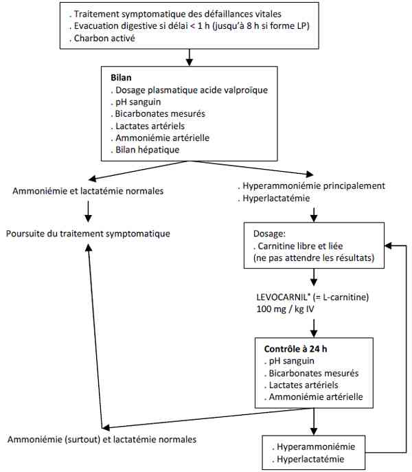

Bienvenue Sur Medical Education
Intoxication : acide valproïque
Spécialité : pediatrie / toxicologie /
Points importants
-
La configuration spatiale de l'acide valproïque est proche de celle des acides gras avec lesquels il entre en compétition
-
Il peut en résulter une déviation métabolique avec apparition d'une hyperammoniémie, d'une hyperlactatémie et d'un coma
-
La prescription de L-carnitine, associée au traitement symptomatique peut supprimer cette déviation métabolique et corriger rapidement les troubles métaboliques
Présentation clinique / CIMU
SIGNES FONCTIONNELS
Présentation clinique / CIMU
SIGNES FONCTIONNELS
Troubles neuro-psychiques
- Somnolence, syndrome confusionnel
- HTIC sur oedème cérébral
- Convulsions (la dose est alors > 200 mg/kg, ou bien il faut rechercher une polyintoxication)
Cardio-vasculaires
- Lipothymie, palpitations
CONTEXTE
Terrain
- Pas de profil particulier
Traitement usuel
- Acide valproïque (Dépakine®, Dépakote®)
Antécédents
- Patient épileptique ou psychotique traité par l'acide valproïque (Dépakine®, Dépakote®)
Facteurs de risque
- Insuffisance hépatique
- Déficit enzymatique portant sur la bêta-oxydation
- Déficit inné ou acquis en carnitine
Circonstances de survenue
- Tentative de suicide par ingestion le plus souvent
- Accident lors d'administration par voie IV
- Effet secondaire indésirable (surtout chez l'enfant)
EXAMEN CLINIQUE
Neurologique
- Somnolence
- Troubles de la conscience allant jusqu'au coma (apprécier par le score de Glasgow), sans signe de localisation
- Coma profond hypotonique avec hyporéflexie ostéotendineuse
- Convulsions
Cardio-vasculaire
- Tachycardie, plus rarement bradycardie
- HoTA
Pulmonaire
- Dyspnée de Kussmaul par acidose métabolique
- Polypnée par inhalation
Autres signes
- Fièvre : rechercher une pneumopathie d'inhalation
EXAMENS PARACLINIQUES SIMPLES
- SpO2 : Hypoxie en cas d'inhalation
- ECG : Tracé d'acidose métabolique avec hyperkaliémie
CIMU
- Tri : 1 à 3 en fonction de l'atteinte des fonctions vitales
Signes paracliniques
BIOLOGIQUE
-
NFS : thrombopénie, leucopénie
-
Gazométrie : acidose métabolique
-
Ionogramme sanguin : hyperkaliémie, bicarbonates abaissés, trou anionique augmenté
-
Hypoglycémie
-
Hyperlactatémie
-
Hyperammoniémie
-
Carnitine libre et liée : hypocarnitinémie
-
Bilan hépatique : élévation des transaminases
TOXICOLOGIQUE
-
Dosage plasmatique de l'acide valproïque
IMAGERIE
Radiographie pulmonaire
- Pneumopathie
TDM cérébral
- Œdème cérébral
Diagnostic étiologique
Dosage plasmatique de l'acide valproïque (seuil de toxicité > 100 mg/L, critère de gravité si > 450 mg/L)
Association
- Hyperammoniémie
- Acidose lactique
Diagnostic différentiel
Coma par insuffisance hépatique
- Notion de prise médicamenteuse importante
- Dosage de l'acide valproïque
Etat de mal épileptique
Encéphalopathie hypercapnique sur pneumopathie
Traitement
TRAITEMENT PREHOSPITALIER / INTRAHOSPITALIER
Stabilisation initiale
- Voie veineuse de bon calibre
- Remplissage vasculaire au NaCl 0,9% si collapsus (500-1000 mL)
- Oxygénation systématique
-
Intubation et ventilation contrôlée si coma avec
 Glasgow < 8
Glasgow < 8 - Clonazépam 1 mg IVD si convulsion (à répéter si besoin)
Suivi du traitement
-
Décontamination digestive si vu dans les 2 heures, en l'absence de contre-indications :
- charbon activé 50 g
- doses répétées (25 g/8 h) si forme à libération prolongée, en l'absence de contre-indication
- Alcalinisation si pH < 7,20 avec bicarbonates
- Hémodialyse : efficace sur la clairance d'élimination, mais l'intérêt clinique n'est pas démontré (réveil du coma, amélioration hémodynamique)
MEDICAMENTS
L-carnitine
- L'efficacité de cet antidote n'est pas encore établie. Néanmoins, il est proposé dans les intoxications graves avec répercussion métabolique sévère
- Administrer une seule fois 100 mg/kg aux urgences et suivre l'évolution des lactates et de l'ammoniémie ; s'ils réaugmentent après avoir baissé ou continuent d'augmenter, renouveler l'injection
-
Les indications usuelles :
- hyperlactatémie ou hyperammoniémie attribuable à l'acide valproïque
- oedème cérébral
- concentration massive > 850 mg/L
Surveillance
CLINIQUE
-
Conscience (score de Glasgow), PA, FC, FR / h
-
Scope
PARACLINIQUE
-
Ammoniémie artérielle (renouveler l'administration de L-carnitine, en l’absence de baisse ou si remontée des concentrations)
-
Acide lactique (renouveler l'administration de L-carnitine, en l’absence de baisse ou si remontée des concentrations)
-
Gazométrie
-
Dosage d'acide valproïque
Devenir / orientation
CRITERES D'ADMISSION
Ammoniémie artérielle (renouveler l'administration de L-carnitine, en l’absence de baisse ou si remontée des concentrations)
Acide lactique (renouveler l'administration de L-carnitine, en l’absence de baisse ou si remontée des concentrations)
Devenir / orientation
CRITERES D'ADMISSION
En UHCD
- Systématiquement pour toute intoxication sans signe de gravité (surtout pour les intoxications avec formes retard)
En réanimation
- Si atteinte des fonctions vitales : coma, convulsions,oedème cérébral, état de choc
- Si aggravation d'un coma (intubation si Glasgow < 8 ou autre critère de gravité)
- Si acidose métabolique, hyperammoniémie, hypoglycémie
CRITERES DE SORTIE DU SAU
- Disparition de tout trouble de la conscience, de tout trouble métabolique et amélioration significative de l'hypoxémie en cas de pneumonie
- Amélioration du bilan hépatique
- Après avis psychiatrique en cas d'intoxication volontaire
Mécanisme / description
METABOLISME
-
Absorption digestive rapide et quasi-complète
-
Pic plasmatique atteint en 1 à 2 heures, et entre 3 et 8 heures pour les formes à libération prolongée
-
Forte liaison protéique (80 à 94 %)
-
Volume de distribution de 8 à 9 L
-
Demi-vie plasmatique = 8 à 14 heures, et jusqu'à 48 heures
-
Le taux d'élimination du plasma est d'autant plus important que la concentration plasmatique est élevée (la clairance varie dans le même sens que la concentration sanguine)
-
1 à 3% est éliminé sous forme inchangée dans les urines, le reste après métabolisation en dérivés liés à la carnitine
-
Configuration spatiale de l'acide valproïque = proche de celle des acides gras avec lesquels il entre en compétition lors :
-
de son transport (lié à la carnitine)
-
de son métabolisme intra-mitochondrial (oxydation)
-
de son élimination (lié à la carnitine)
PHARMACODYNAMIE
-
Forme libre = à l'origine des manifestations cliniques, notamment neurologiques
-
La déviation du métabolisme entraîne un risque plus élevé de troubles métaboliques (hyperammoniémie, hyperlactatémie)
-
Carnitine = amine quaternaire ayant un rôle dans le transport des acides gras à chaîne longue (et donc de l'acide valproïque) à travers la membrane mitochondriale
-
L'acide valproïque induit une diminution de la synthèse de carnitine et une baisse de carnitine libre d'où une difficulté de transport à travers la membrane mitochondriale
-
Cette diminution de l'action de la carnitine entraîne une cascade de perturbations métaboliques :
-
hypocarnitinémie :oedème cérébral, coma, atteinte hépatique (hypoglycémie, hyperammoniémie, acidose métabolique, syndrome de Reye)
-
interférence avec le métabolisme des acides gras : diminution de la cétogenèse, métabolites hépatotoxiques
-
interférences avec le cycle de l'urée : hyperammoniémie
-
altération du métabolisme énergétique : hyperlactatémie, inhibition de la glucogenèse
Algorithme
-
Algorithme : intoxication à l’acide valproïque
- de son transport (lié à la carnitine)
- de son métabolisme intra-mitochondrial (oxydation)
- de son élimination (lié à la carnitine)
- hypocarnitinémie :oedème cérébral, coma, atteinte hépatique (hypoglycémie, hyperammoniémie, acidose métabolique, syndrome de Reye)
- interférence avec le métabolisme des acides gras : diminution de la cétogenèse, métabolites hépatotoxiques
- interférences avec le cycle de l'urée : hyperammoniémie
- altération du métabolisme énergétique : hyperlactatémie, inhibition de la glucogenèse
Algorithme
- Algorithme : intoxication à l’acide valproïque
 _86 Algorithme Algorithme : intoxication à l'acide valproïque
Bibliographie
-
Anthony S. Manoguerra, Andrew R. Erdman, Alan D. Woolf et al. Valproic acid poisoning: An evidence-based consensus guideline for out-ofhospital management. Clinical Toxicology 2008,46: 661 - 676
-
Wayne R Snodgrass. Valproic acid. In: Critical care toxicology: diagnosis and management of the critically poisoned patient. J. Brent et al editors. Elsevier Mosby, 2005 : 565 - 570
-
R. Bédry, F. Parrot. Intoxications graves par l'acide valproïque. Réanimation 2004, 13 : 324-333
Auteur(s) : Régis BEDRY, Bruno MEGARBANE